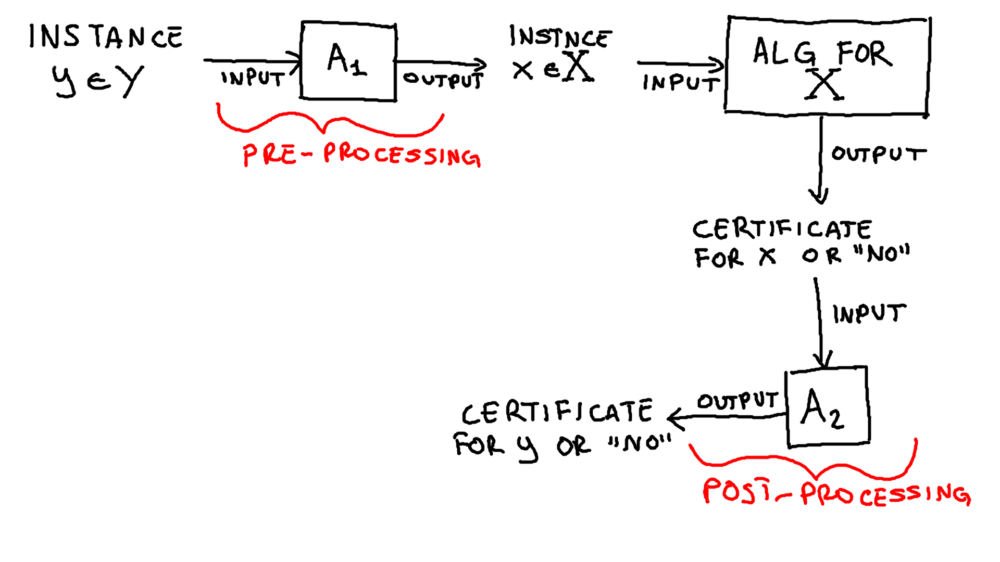
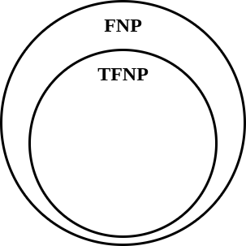
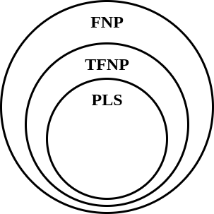
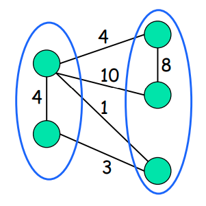
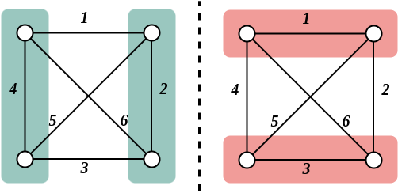
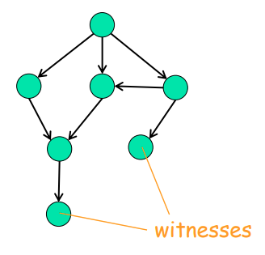
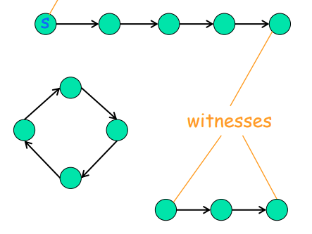
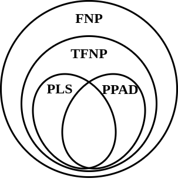

ADRC - Lesson 25
Indice
Congestion Games
Richiamando il Global Connection Game, gli "ingredienti" del problema sono:
- Un grafo \(G(V,E)\) diretto.
- Dei costi \(c_e\) non negativi per ogni archo \(e \in E\).
- Un insieme di \(k\) player egoistici, dove ad ognuno è associata un nodo sorgente \(s_i\) e una destinazione \(t_i\).
- Ogni player \(i\) deve scegliere come strategia un cammino \(P_i\) che collega \(s_i\) a \(t_i\).
- Data una configurazione di strategie \(S = (P_1, ..., P_k)\), il costo del singolo player \(i\) è pari a \[ COST_i(S) = \sum_{e \in P_i} \frac{ c_e }{ k_e(S) } \] doce \(k_e(S)\) sta ad indicare il numero di player che in \(S\) utilizzano l'arco \(e\).
Abbiamo visto che GCG è un gioco potenziale, e sappiamo che per un gioco potenziale esiste sempre un NE e che applicando la dinamica better response si convergerà sempre ad un NE.
Il problema è che nessuno conosce una dinamica di tipo better response che faccia converge ad un equilibrio in tempo polinomiale,
tantomeno si sa come calcolare un equilibrio in tempo polinomiale.
Perciò ci si può chiedere se si riesce a dare un'evidenza formale che il problema sia effettivamente computazionalmente difficile.
Il Congestion Game (CG) è una generalizzazione del GCG.
Gli ingredienti del problema sono:
- Un insieme \(E\) di risorse.
- Un insieme di \(k\) player egoistici.
- Ogni player \(i\) sceglie una strategia \(S_i\) da un suo insieme di possibili strategie \(\mathcal{S}_i \subseteq 2^E\).
- Ogni risorsa \(e \in E\) ha un costo possibile \(c_e(1), c_e(2), ... , c_e(k)\), che dipende dal numero di player che la utilizzano. Se una risorsa \(e \in E\) è usata da \(x\) player, allora il suo costo sarà \(c_e(x)\).
- Dato un vettore di strategie \(S \in \mathcal{S}_1 \times \mathcal{S}_2 \times ... \times \mathcal{S}_k\), il costo del player \(i\) sarà \[ COST_i(S) = \sum_{e \in S_i} c_e(k_e(S)) \] dove \(k_e(S)\) indica il numero di player che utilizzano la risorsa \(e\) nelle rispettive strategie.
È possibile dimostrare che CG è un gioco potenziale, con funzione potenziale
\[
\Phi(S) = \sum_{e \in E} \sum_{i = 0}^{k_e(S)} c_e(i)
\]
Ciò implica che esiste sempre un NE per il CG (ogni minimo locale di \(\Phi\)), e che la dinamica better response converge sempre a un NE.
FNP class
Per iniziare a capire quanto può essere complesso il Congestion Game il primo passo è quello di definire formalmente un problema.
Definiamo quindi con CG-NE il problema del calcolo di un equilibrio di Nash per il Congestion Game.
Def:
CG-NE problem
Data un'istanza del Congestion Game, calcolare un equilibrio di Nash (a strategie pure).
A questo punto ci possiamo chiedere in quale classe di complessità collocare il CG-NE problem.
Sicuramente non possiamo collocare CG-NE direttamente nella classe NP, in quanto NP è una classe di problemi decisionali, mentre per CG-NE si richiede di ricercare una soluzione.
Perciò abbiamo bisogno di definire una classe di complessità in cui collocare i problemi come CG-NE.
Def:
FNP class(Functional NP)
La classeFNPè la classe di problemi che risolvono il seguente tipo di compito:
data un'istanza di un problema decisionale \(\Pi \in NP\), determinare se tale istanza è unaYES-instance1, e in tal caso calcolare/trovare uncertificato polinomiale2 per data istanza, oppure se è unaNO-instance, e in tal caso restituire la stringaNO.
I problemi FNP sono anche noti come search problems, in quanto non si richiede solamente di stabilire se una data istanza è una YES-instace o una NO-instace, ma di ricercare (nel caso di YSE-instace)
una effettiva soluzione per data istanza.
FNT-completezza di CG-NE
Come qualsiasi altra classe di complessità, si può definire il concetto di completezza di un problema rispetto alla classe FNP.
Perciò diciamo che un problema \(X \in FNP\) è FNP-completo se per ogni altro problema \(Y \in FNP\) esiste una riduzione polinomiale \(\chi\) da \(Y\) a \(X\) tale che
per ogni istanza \(y \in Y\) esiste un certificato polinomiale per \(y\) se e solo se esiste un certificato polinomiale per l'istanza \(\chi(y) \in X\).
In questo caso diremo che ogni problema \(Y\) è riducibile polinomialmente ad \(X\), \(Y \preccurlyeq_P X\).
Un altro modo per dire che un problema \(Y\) è riducibile polinomialmente ad \(X\), è mostrare che la presenza di due algoritmi polinomiali \(A_1,A_2\) tali che:
- per ogni istanza \(y \in Y\) l'algoritmo \(A_1\) crea in tempo polinomiale nella grandezza di \(y\) un'istanza \(A_1(y) \in X\), tale che esiste un certificato polinomiale di \(y\) se e solo se ne esiste uno di \(A_1(x)\).
- per ogni certificato polinomiale \(t\) per l'istanza \(A_1(y) \in X\), \(A_2\) calcola un certificato polinomiale \(A_2(t)\) per l'istanza iniziale \(y\).
Possiamo quindi vedere la riduzione come un porecco si pre e post processing di un'instanza \(y \in Y\).

Perciò dato un problema \(X\) già noto essere FNP-completo, se riuscissimo a trovare una riduzione polinomiale vero CG-NE per transitività delle riduzioni polinomiali,
potremmo dire che anche CG-NE è FNP-completo.
THM 1
CG-NEnon èFNP-completoa meno cheNP = coNP3. In altri termini, seCG-NEèFNP-completoalloraNP = coNP.
Proof. Sappiamo che
SATè un problemFNP-completo, in quanto trovare un'assegnazione di verità che soddisfa una formula diSATequivale al decidere se tale istanza è una istanzaYES. Supponiamo cheCG-NEsiaFNP-completo, ovvero di avere una riduzione polinomia daSATaCG-NE. Quindi esistono:
- un algoritmo efficiente4 \(A_1\) che ad ogni formula (istanza) \(\phi\) di
SATassocia un'istanza \(A_1(\phi)\) diCG-NE.- un algoritmo efficiente4 \(A_2\) che ad ogni equilibrio di Nash \(S\) per \(A_1(\phi)\) associa un'assegnazione di verità \(A_2(S)\) per la formula \(\phi\) se soddisfacibile, altrimenti ritorna
NO.Consideriamo quindi una formula \(\phi \in SAT\) non soddisfacibile. Computiamo quindi in tempo polinomiale l'istanza \(A_1(\phi) \in CG-NE\). Certamente esiste un equilibrio \(S\) per \(A_1(\phi)\), in quanto
CG-NEè un gioco potenziale. Dato che per ipotesi \(\phi\) è non soddisfacibile, allora \(A_2(S)\) ritorneràNOin tempo polinomiale. Così facendo avremmo dimostrato che in tempo polinomiale si può trovare un certificato anche per leNO-instacediSAT, ovvero evremmo dimostrate cheNP = coNP\(\square\).
TFNP - Total FNP
Nel teorema precedente viene sostanzialmente sfruttato il fatto che un'isatnza di CG-NE ha sempre un equilibrio di Nash \(S\), perciò in qualche modo possiamo dire che tutte le istanze di CG-NE sono YES-instance.
Definiamo quindi una classe più specifica nella quale collocare CG-NE.
Def:
TFNP class(Total FNP)
La classeTFNPè la clesse di tutti quei problemiFNPper la quale esiste sempre almeno unaYES-instace.
Per prima cosa possiamo osservare che per definizone \(TFNP \subseteq FNP\).

Figura 2: \(TFNP \subseteq FNP\).
Osserviamo inoltre che otteniamo il risultato del Teorema 1 solamente grazie al fatto che CG-NE è un problema TFNP.
In poche parole, se riapplichiamo il Teorema 1 su un qualsiasi problema TFNP otterremo che
THM 2
Se un problemaTFNPèFNP-completoalloraNP = coNP.
Esmpi di problemi TFNP
Secondo il teorema di Nash sappiamo che ogni gioco finito ammette sempre un Equilibrio a strategie miste.
Perciò il problema di trovare un equilibrio a strategie miste per un gioco finito è un problema TFNP.
Un altro problema TFNP è il problema Factoring5, in quanto grazie al Teorema fondamentale dell'aritmetica sappiamo che ogni numero può essere scomposto nel prodotto di un'unica sequenza di numeri primi.
TFNP-completeness?
Dato che abbiamo visto che non possiamo dimostrare che CG-NE è FNP-completo (a meno che NP = coNP) potremmo voler dimostrare che CG-NE è TFNP-completo.
Purtroppo però non si conoscono ad ora problemi TFNP-completi.
Si pensa che il motivo per il quale non si possono trovare problemi TFNP-completi completi è perché TFNP è una classe semantica e non una classe sintattica.
Le differenze tra le due tipologie di calssi sono:
- Classi Sintattiche
- Le classi sintattiche sono caratterizzare dal fatto che esiste un modello di calcolo che permette di stabilire se un dato problema appartiene o meno alla classe in questione.
- Classi Semantiche
- Nelle classi semantiche invece l'appartenenza o meno di un proble alla classe in questione non dipende tanto dal modello di calcolo che la definisce, quanto a fattori esterni.
Per esempio, l'appartenenza di
CG-NEinTFNPdipende dal fatto che la toeria dei giochi ci dice che in un gioco potenziale esiste sempre un equilibrio di Nash a strategie pure. Stessa cosa perfactoring, il teorema fondamentale dell'aritmetica ci garantisce che ogni numero o è primo, oppure può essere scomposto in numeri primi.
PLS
Abbiamo visto che CG-NE non può essere ne FNP-completo (a meno che NP = coNP) ne TFNP-completo (perché classe semantica).
Perciò vogliamo sapere in quale classe di complessità poter collocare CG-NE per la quale esso è un problema completo (o difficile).
Tale classe è la classe PLS, ovvero Polinomial Local Search.
Def:
PLS class(Polinomial Local Search)
La classePLSè la classe di problemi di ricerca di ottimi locali tramite un algoritmo polinomiale ricerca locale.
Per algoritmo polinomiale di ricerca locale si intende un algoritmo che:
- calcoli in tempo polinomiale una qualsiasi soluzione ammissibile \(X\).
- data una soluzione ammissibile \(X\) in tempo polinomiale riesce a calcolarne il valore.
- data una soluzione ammissibile \(X\) in tempo polinomiale riesce a definire se essa è un ottimo locale, oppure se c'è un'altra soluzione nel vicinato di \(X\)6 migliore. Ovvero se in tempo polinomiale si può trovare un'azione better response.
Perciò non è necessariamente richiesto che l'algoritmo di ricerca locale converga in tempo polinomiale ad una soluzione.
Certamente CG-NE è un problema in PLS, in qunato tutti gli equilibri \(S\) sono ottimi locali della funzione potenziale \(\Phi\), e sappiamo che tramite la dinamica better response (ovvero una ricerca locale) si riesce sempre a trovare un equilibrio.
Infatti, ritornando ai 3 punti di come deve essere un algoritmo polinomiale di ricerca locale per CG-NE avremo che:
- scelgo un qualsiasi progilo di strategie valido \(S\) in tempo polinomiale.
- con un doppio ciclo \(\texttt{for}\) riesco a calcolare \(\Phi(S)\).
- in tempo polinomiale cerco un palyer che ha la possibilità di fare una mossa better respose.
È anche facile constatare che \(PLS \subseteq TFNP\).
Infatti certamente un problema in PLS è un problema di ricerca di una soluzione (perciò \(PLS \subseteq FNP\)), inoltre se staimo dicendo di voler ricercare gli ottimi locali (e non se esistono) vuol dire che stiamo dando per scontato che esiste sempre almeno una soluzione (prciò \(PLS \subseteq TFNP\)).

Figura 3: \(PLS \subseteq TFNP\).
PLS-reduction
Prima di parlare della completezza dei problemi in PLS è doveroso definire cosa è una riduzione tra problemi di ricerca locale.
La definizione è del tutto analoga alle altre classi.
Perciò una riduzione da un problema \(Y \in PLS\) ad un altro \(X \in PLS\) è una coppia di algoritmi \(A_1, A_2\) tali che:
- Per ogni istanza \(y \in Y\) l'algoritmo \(A_1\) crea in tempo polinomiale un'istanza \(A_1(y) \in X\).
- Per ogni ottimo locale di un'istanza \(x \in X\), l'algoritmo \(A_2\) calcola in tempo polinomiale un ottimo locale per \(y\).
Ovviamente se esiste un algoritmo di ricerca locale per \(X\) che converge in tempo polinomiale, allora possiamo risolvere anche \(Y\) in tempo polinomiale.
PLS-completeness
Abbiamo quindi dato una classe sintattica che contiene CG-NE.
È possibile dimostrare che CG-NE è PLS-completo.
Per prima cosa però bisogna identificare un problema PLS-completo, per poi mostrarne una riduzione verso CG-NE.
Maximum Cut Problem
Gli ingredienti del Maximum Cut Problem sono:
- Input
- Un grafo non diretto e pesato con pesi non negativi \(G = (V, E, w: E \rightarrow \mathbb{R}^+)\).
- Soluzione Ammissibile
- Un taglio \((X, V \setminus X) \subseteq E\).
- Misura da ottimizzare
- Si vuole trovare una soluzione ammissibile di dimensione massima, ovvero si vuole massimizzare il seguente valore \[ \sum_{(u,v) \in (X, V \setminus X)} w(u,v) \]

Figura 4: Esempio di Max Cut.
È già noto che tale problema è NP-hard.
Possiamo però applicare un'euristica di ricerca locale per trovare un taglio massimale7, ovvero un massimo locale.
Tale ricerca funziona nel seguente modo:
- Considero un qualsiasi taglio \((X, \overline{X})\).
- Se spostando un solo vertice da un lato del taglio all'altro ottengo una soluzione migliore, allora faccio questa mossa.
- Quando non riesco più a trovare una mossa da fare che milgiori il valore della mia soluzione, termino l'algoritmo. Il taglio finale sarà un taglio di valore massimale.
Ovviamente non è sempre detto che un massimo locale equivalga a un massimo globale, come si può vedere nella seguente immagine.

Figura 5: A sinistra un massimo locale di valre 15, a destra un massimo globale di valore 17.
Ci si chiede ora
Trovare un ottimo locale è "più semplice" che trovare un ottimo globale? Ovvero, la ricerca locale precedentemente descritta converge in tempo polinomiale o in tempo esponenziale?
Nel caso particolare di grafi non pesati (ovvero quando tutti i pesi valgono 1) si può dimostrare la ricerca locale converge a un ottimo locale in tempo polinomaile.
Infatti ad ogni mossa la soluzione migliora di almeno un arco, e dato che ci sono al più \(n^2\) archi, in al più \(n^2\) mosse si convergerà ad un ottimo locale.
Il problema di trovare un ottimo globale invece, rimane sempre NP-hard anche nel caso particolare di grafi non pesati.
Purtroppo però nel caso generale con pesi generici non negativi anche trovare un ottimo locale è NP-hard.
Ovvero l'euristica precedente, nel caso generale, non converge in tempo polinomiale ad un massimo locale.
Ricapitolando:
- non si conosce un algoritmo polinomiale per calcolare un massimo globale di
Max Cut. - non si conosce un algoritmo polinomiale per calcolare un massimo locale di
Max Cut.
Theorem (Johnson, Papadimitriou, Yannakakis ’85, Schaffer, Yannakakis 91)
Computing a local maximum of a maximum cut instance with general non-negative edge weights is a PLS-complete problem.
Questo teorema ci dice che tutti i problemi in PLS sono riducibili a Max Cut, se se conoscessimo un algoritmo (qualsiasi, non necessariamente di ricerca locale) per risolvere Max Cut in tempo polinomiale alora saremmo in grado di risolvere
in tempo polinomiale tutti i problemi in PLS.
Esiste un corollario di questo teorema che dice anche che se volessimo usare un qualsiasi algoritmo di ricerca locale, si convergerebbe ad una soluzione in tempo esponenziale, indipendentemente dalle scelte fatte per spostarsi durante la ricerca.
Corollary (Johnson, Papadimitriou, Yannakakis, ’85, Schaffer, Yannakakis 91)
Computing a local maximum of a maximum cut instance with general non-negative edge weights using local search can require an exponential (in \(\vert V \vert\)) number of iterations, no matter how an improving local move is chosen in each iteration.
Completezza del Congesion Game
Theorem (Fabrikant, Papadimitriou, Talwar 2004)
CG-NEisPLS-complete.
Proof: verrà proposta una riduazione dal problema del
Local Max CutaCG-NE\[ \texttt{Local Max Cut} \preccurlyeq_P \texttt{CG-NE} \]Data un'istanza \(G=(V,E,w)\) di
Local Max Cutcostruiamo un'istanza diCG-NE.
- Per ogni nodo \(v \in V\) definiamo il player.
- Per ogni arco \(e \in E\) definiamo due risorse \(r_e\) ed \(\overline{r}_e\).
Ogni player \(v\) ha solamente due possibili strategie
\begin{align*} S_v &= \lbrace r_e : e \in \delta(v) \rbrace\\ \overline{S}_v &= \lbrace \overline{r}_e : e \in \delta(v) \rbrace \end{align*}ovvero \(v\) può decidere solamente se comprare tutte le risorse \(r_e\) oppure tutte quelle \(\overline{r}_e\) per tutti i soui archi incidenti.
- per ogni risorsa \(r \in \lbrace r_e, \overline{r}_e \rbrace\) il suo costo sarà \[ c_r(i) = \begin{cases} 0 &\mbox{se } i = 0,1\\ w(e) &\mbox{se } i = 2 \end{cases} \] ovvero se due nodi utilizzano una stessa risorsa allora il suo costo sarà pari al peso del rispettivo arco, 0 altrimenti.
Osserviamo che per ogni possible taglio \((X, \overline{X})\) esiste un relativo profilo di strategie \(S\), e viceversa. Infatti, dato un taglio \((X, \overline{X})\) possiamo dire per ogni nodo \(v \in X\) il rispettivo player ha scelto la strategie \(S_v\), mentre per ogni nodo \(v \in \overline{X}\) il rispettivo player ha scelto la strategia \(\overline{S}_v\).
Viceversa dato un profilo di strategie \(S\), indichiamo il taglio \((X_S, \overline{X}_S)\) dove in \(X_S\) ci sono tutti player che hanno scelto la strategie \(S_v\), mentre in \(\overline{X}_S\) ci sono tutti quei nodi che hanno scelto \(\overline{S}_v\).
Infatti dato un profilo distrategie \(S\) avremo che
\begin{align*} \Phi(S) &= \sum_{r \in R} \sum_{i = 0}^{k_r(S)} c_r(i)\\ &= \cdots = W(E) - W(X_s, \overline{X}_S) \end{align*}Dove \(W(\cdot)\) indica la somma dei pesi degli archi.
Perciò osserviamo che al cresce del valore del taglio \((X,\overline{X})\), la funzione potenziale del rispettivo equilibrio \(S\) decresce. Perciò a un massimo locale perLocal Max Cutcorrisponde un minimo \(\Phi(S)\), e viceversa \(\square\).
Complexity of Mixed Nash Equilibria
Abbiamo appena collocato un problema che riguarda la ricerca di un equilibrio a strategie pure come PLS-completo.
In generale però non è detto che in ogni tipo di gioco esista un equilibrio a strategie pure, per il momento ne abbiamo la certezza solamente per i giochi potenziali.
Viceversa per gli equilibiri a strategie miste, sappiamo grazie al Teorema di Nash che esiste sempre un equilibrio per qualsiasi gioco finito.
Perciò per esempio ci si potrebbe chiedere dove poter catalogare un problema di ricerca di equilibri a strategie miste.
Per esempio consideriamo il gioco Bitmatrix Game con soli due players (senza perdita di tempo non entriamo nel dettaglio della descrizione).
Definiamo ora il problema MNE
Def:
MNE problem
Dato un'istanza di un qualsiasi gioco finito a due player (per esempioBitmatrix), trovare un equilibrio a strategie miste.
Sappiamo già che esiste una soluzione, perciò possiamo catalogare questo problema in TFNP
\[
\texttt{MNE} \in \texttt{TFNP}
\]
e inoltre non si conosce nessun algoritmo polinomiale che risolva tale problema.
Dato che sappiamo che probabilmente non esistono problemi TFNP-completi ci chiedhimo: dove catalocare più precisamente MNE?
PPAD
Intuitivamente possiamo visualizzare la classe PLS come quella classi di problemi per i quali esiste un DAG8 dove i
nodi rappresentano delle soluzioni possibili mentre un arco diretto rappresenta un improving local move9.

Figura 6: DAG di una ricerca locale di un prblema PLS.
Possiamo quindi pensare ai nodi pozzo di questo DAG come gli ottimi locali del problema.
Esiste invece una classe equivalente per il problema di ricerca di equilibri a strategie miste, nota come PPAD.
Tale classe è simile intuitivamente alla classe PLS, ovvero si effettua una ricerca locale per non su di un DAG, bensì su un grafo diretto
di in- e out- degree pari esattamente 1.
Perciò i tipi di grafi in questione sono o delle liste o degli anelli.

Figura 7: Grafo di una ricerca locale di un prblema PPAD.
In questo caso però le soluzioni non sono solamente i nodi pozzo, ma anche i nodi sorgente.
In teoria il termine PPAD sta per Polynomial Parity Argument in a Directed graph, ma in realtà la leggenda vuole che il nome di questa classe è dato dalla somiglianza
col nome di chi ha definito questa classe, Christos H. Papadimitriou.
Theorem (Daskalakis, Godberg, Papadimitriou 06, Chen,Deng,Teng 06)
Computing anyMNEof a bimatrix game isPPAD-complete.

Figura 8: Catalogazione classe PPAD.
Note a piè di pagina:
istanze di un problme in NP che ammettono l'esistenza di un certificato verificabile in tempo polinomiale nella grandezza dell'istanza.
un certificato verificabile in tempo polinomiale ha certamente una dimensione polinomiale, in quanto per essere verificato va innanzitutto letto.
la classe di tutti i problemi per i quali è possibile identificare un certificato polinomiale per le NO-instance.
calcolabile in tempo polinomiale.
scomposizione in numeri primi.
per vicinato di una soluzione \(X\) si intende l'insieme di tutte quelle soluzioni ammissibili \(Y\) tali che si può passare da \(X\) ad \(Y\) facendo una sola mossa/modifica.
un taglio è detto massimale se, spostando un qualsiasi nodo da un lato del taglio all'altro il nuovo taglio non è migliore del precedente.
Directed Acyclic Graph.
un movimento better response durante la ricerca locale.